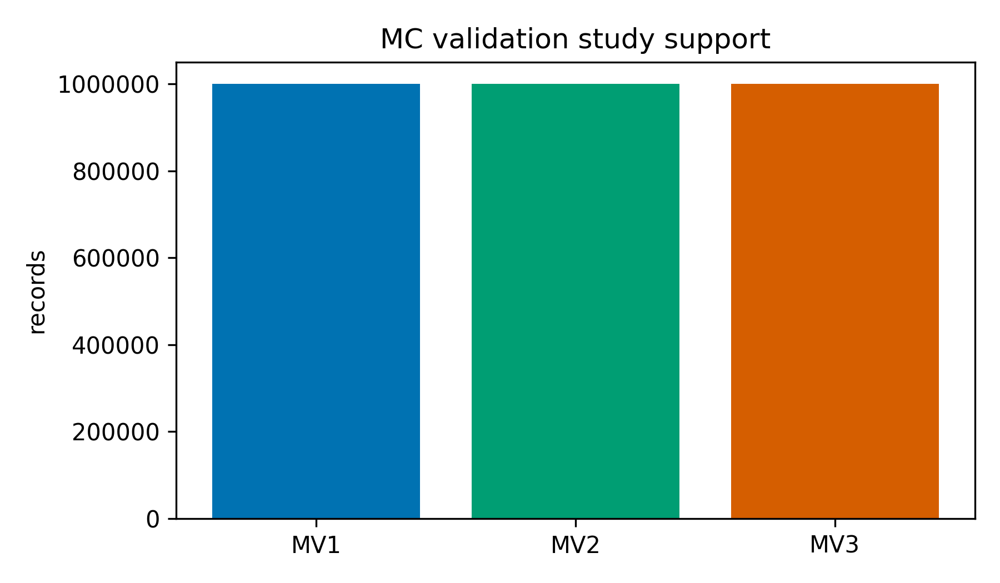
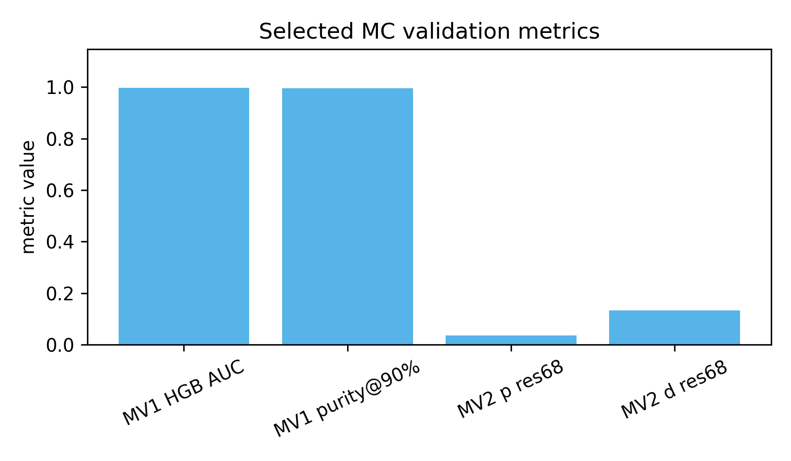

Status: PASS; full figure catalog: BLOCKED.
Status: PASS
Bar chart summarizing available support for MV1, MV2, and MV3 artifact studies.

Data sidecar: reports/mc_validation/summary/metrics_table.csv
Status: PASS
Bar chart of selected artifact metrics for MV1, MV2, and MV3.

Data sidecar: reports/mc_validation/summary/metrics_table.csv